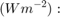
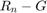
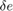
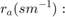
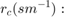
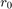
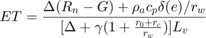

Contents
- calculate the maximum(potential) evaporation and tranpiration and the transpiration raterate
- output variables
- input variables
- calculate the slope of the saturated vapor pressure curve in Pa/K */
- calculate scale height based on average temperature in the column */
- use hypsometric equation to calculate p_z, assume that virtual temperature is equal air_temp */
- calculate latent heat of vaporization. Eq. 4.2.1 in Handbook of Hydrology, assume Ts is Tair */
- calculate gamma. Eq. 4.2.28. Handbook of Hydrology */
- calculate the evaporation in mm/s
function evap=Penman(elevation,Tair,netRad,VPD,ra,rc,rarc)
calculate the maximum(potential) evaporation and tranpiration and the transpiration raterate
by Shen, Xinyi, April, 2015 contact xinyi.shen@uconn.edu
output variables
potEvapVeg (mm/s): maximum evaporation rate of free water with only the vegetation structural resistance water is within the canopy layer or above the surface when there is suffcient supply (mm/s). potEvapBs (mm/s): maximum evaporation rate of free water over bare soil surface with neither vegetation structrual resistance nor actEvap (mm/s): actual transpiration rate of soil moisture by vegetation transpiration when with soil moisture deficit stress
input variables
elevaition (m): DEM
Tair (C): temperature of the air
netRad:  Net irradiance (), the external source of energy flux, 
VPD (Pa): vapor pressure deficit, 
 aerodynamic resistance
 canopy resistance
rarc:  canopy architectural resistance
global KELVIN T_LAPSE PS_PM CP_PM
calculate the slope of the saturated vapor pressure curve in Pa/K */
if isempty(elevation) evap=[]; return; end [~,slope]=saturatedVaporPressure(Tair);
Not enough input arguments. Error in Penman (line 35) if isempty(elevation)
calculate scale height based on average temperature in the column */
h = 287/9.81 * ((Tair + KELVIN) + 0.5*elevation * T_LAPSE);
use hypsometric equation to calculate p_z, assume that virtual temperature is equal air_temp */
pz = PS_PM * exp(-elevation./h);
calculate latent heat of vaporization. Eq. 4.2.1 in Handbook of Hydrology, assume Ts is Tair */
lv = 2501000 - 2361 * Tair;
calculate gamma. Eq. 4.2.28. Handbook of Hydrology */
gamma = 1628.6 * pz./lv; % calculate factor to be applied to rc/ra */ % calculate the dry air density, using eq. 4.2.4 Handbook of Hydrology */ rho_air = 0.003486 * pz./(275 + Tair);
calculate the evaporation in mm/s

netRad(netRad<0)=0; nominator=(slope.* netRad + CP_PM*rho_air.* VPD./ra)./lv; evap = nominator./(slope + gamma .* (1 + (rc + rarc)./ra)); % potEvapVeg = nominator./(slope + gamma .* (1 + rarc./ra)); % potEvapBs=nominator./(slope + gamma); % %% if VPD<0, dew is formed at the basic rate and there is no evaporation or transpiration % % otherwise, if net radiation is negative, the total evaporation rate is also the basic rate % % however, the PET will not be affected % isBasicRate=(VPD<0)|(netRad<0); % actEvap(isBasicRate)= airDens(isBasicRate).*(EPS./press(isBasicRate)).*VPD(isBasicRate)./ra(isBasicRate)/RHO_W; % potEvapBs(isBasicRate)=actEvap(isBasicRate);
end